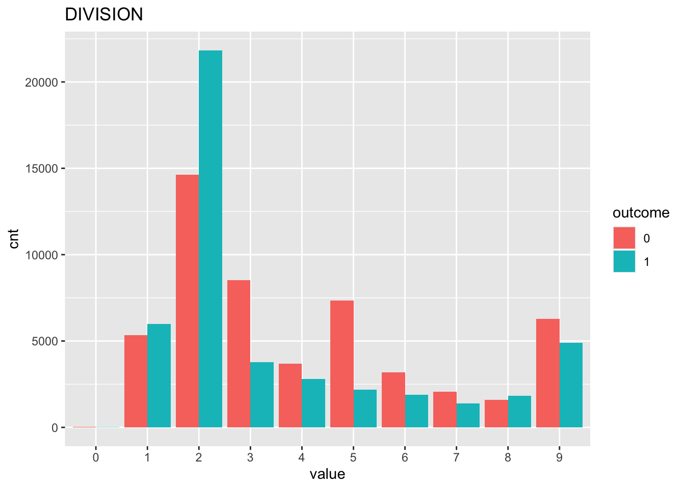
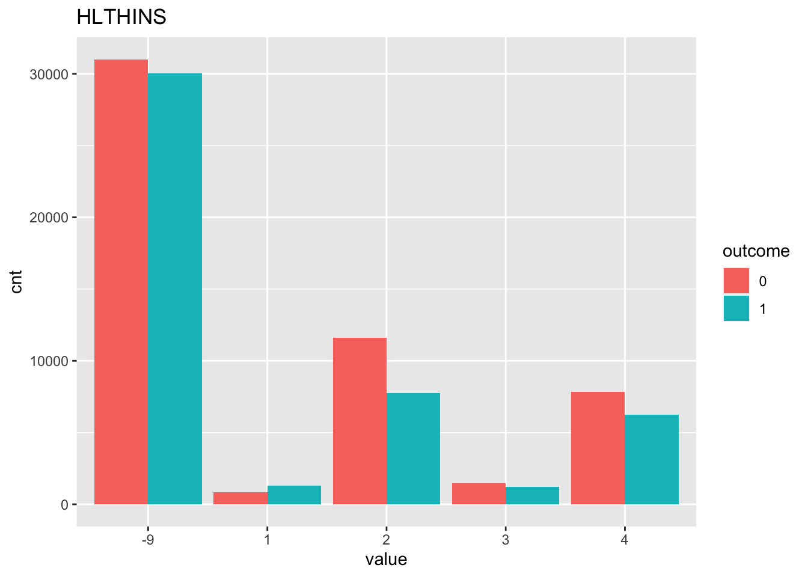
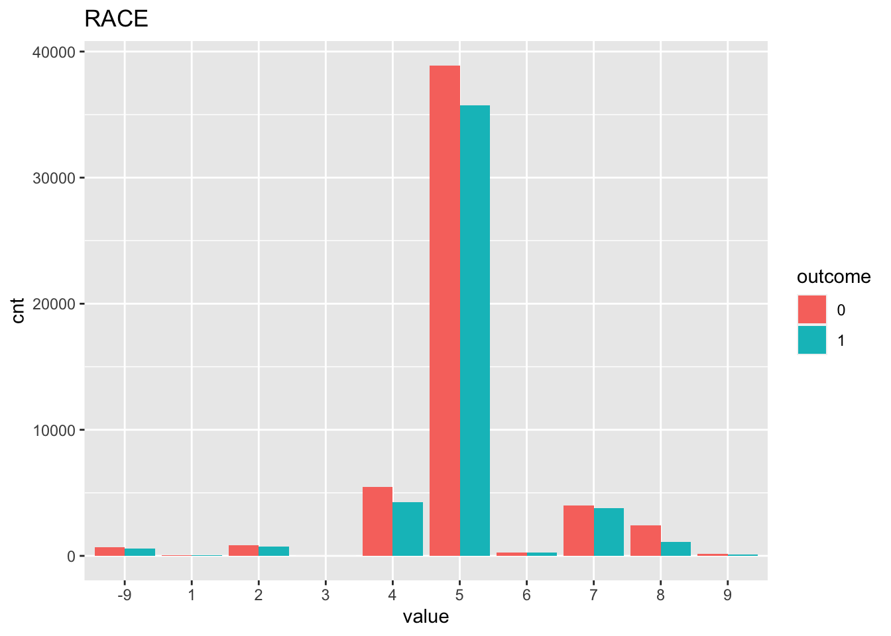
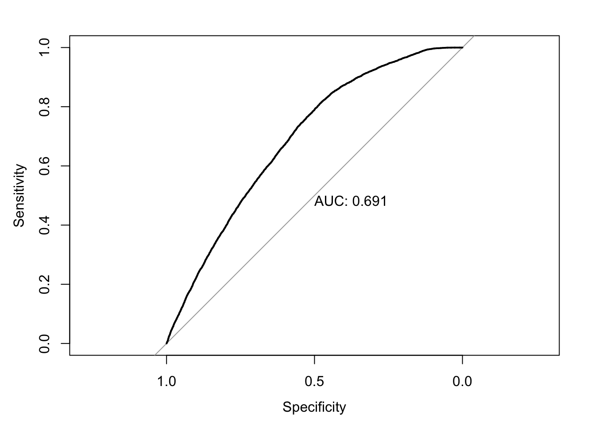

Last updated: 2020-11-25
Checks: 6 1
Knit directory: teds_ml/
This reproducible R Markdown analysis was created with workflowr (version 1.6.2). The Checks tab describes the reproducibility checks that were applied when the results were created. The Past versions tab lists the development history.
The R Markdown is untracked by Git. To know which version of the R Markdown file created these results, you’ll want to first commit it to the Git repo. If you’re still working on the analysis, you can ignore this warning. When you’re finished, you can run wflow_publish to commit the R Markdown file and build the HTML.
Great job! The global environment was empty. Objects defined in the global environment can affect the analysis in your R Markdown file in unknown ways. For reproduciblity it’s best to always run the code in an empty environment.
The command set.seed(20201124) was run prior to running the code in the R Markdown file. Setting a seed ensures that any results that rely on randomness, e.g. subsampling or permutations, are reproducible.
Great job! Recording the operating system, R version, and package versions is critical for reproducibility.
Nice! There were no cached chunks for this analysis, so you can be confident that you successfully produced the results during this run.
Great job! Using relative paths to the files within your workflowr project makes it easier to run your code on other machines.
Great! You are using Git for version control. Tracking code development and connecting the code version to the results is critical for reproducibility.
The results in this page were generated with repository version 2998c45. See the Past versions tab to see a history of the changes made to the R Markdown and HTML files.
Note that you need to be careful to ensure that all relevant files for the analysis have been committed to Git prior to generating the results (you can use wflow_publish or wflow_git_commit). workflowr only checks the R Markdown file, but you know if there are other scripts or data files that it depends on. Below is the status of the Git repository when the results were generated:
Ignored files:
Ignored: .DS_Store
Ignored: analysis/.DS_Store
Ignored: analysis/figure/
Untracked files:
Untracked: analysis/teds_logistic.Rmd
Untracked: data/tedsa_puf_2017.csv
Untracked: data/tedsd_puf_2017.csv
Unstaged changes:
Modified: analysis/feature_exploration.Rmd
Modified: analysis/index.Rmd
Modified: code/teds_utils.R
Note that any generated files, e.g. HTML, png, CSS, etc., are not included in this status report because it is ok for generated content to have uncommitted changes.
There are no past versions. Publish this analysis with wflow_publish() to start tracking its development.
Refer to the codebook for variable descriptions.
Response: Successful completion of short or long-term opioid treatment. Features: See myvars defined below.
mydata <- read.csv("data/tedsd_puf_2017.csv")
# filter
mydata <- mydata %>% filter(SUB1 %in% c(5,6,7), SERVICES %in% c(4,5))
mydata$COMPLETED = ifelse(mydata$REASON==1, 1, 0) #create response variable
myvars <- c("ROUTE1", "ALCFLG", "FREQ1", "FRSTUSE1", "IDU","COKEFLG", "BENZFLG", "PSYPROB", "HLTHINS", "PRIMPAY", "AGE", "GENDER", "LIVARAG", "DIVISION", "METHUSE", "NOPRIOR", "EDUC", "HERFLG","RACE","MARSTAT","PRIMINC","ETHNIC","ARRESTS_D")
response = "COMPLETED"
teds <- as.data.frame(lapply(mydata[myvars], factor))
teds[, response] = mydata[, response]First, we check to see if our classes are balanced.
table(teds[,response])
0 1
52681 46576 In this case it looks ok! Next, we can vizualize some (or all) of the relationships between the features and the response. Here we just look at 3 of the variables so it’s less chaotic.
sbs_response_plots(teds, c("DIVISION", "HLTHINS", "RACE"), response)
Next, split the data into training and testing sets, using 3/4 of the data for training and holding out 1/4 for testing.
teds_split = initial_split(teds, prop=3/4)
# extract training and testing sets
teds_train <- training(teds_split)
teds_test <- testing(teds_split)Now, we fit a logistic regression model on our training data. We display the coefficients as well as the predictive performance on the test data.
fm <- as.formula(paste(response, "~ ."))
lg = glm(fm, family=binomial, data=teds_train)
summary(lg)
Call:
glm(formula = fm, family = binomial, data = teds_train)
Deviance Residuals:
Min 1Q Median 3Q Max
-2.2290 -1.1070 -0.3381 1.0668 2.8700
Coefficients:
Estimate Std. Error z value Pr(>|z|)
(Intercept) 0.682268 1.050236 0.650 0.515929
ROUTE11 0.006472 0.107880 0.060 0.952164
ROUTE12 0.202585 0.109281 1.854 0.063768 .
ROUTE13 0.035840 0.105042 0.341 0.732957
ROUTE14 0.059700 0.121362 0.492 0.622779
ROUTE15 -0.388944 0.129429 -3.005 0.002655 **
ALCFLG1 0.036017 0.022627 1.592 0.111428
FREQ11 -0.102065 0.035761 -2.854 0.004317 **
FREQ12 -0.196537 0.035938 -5.469 4.53e-08 ***
FREQ13 -0.284881 0.031709 -8.984 < 2e-16 ***
FRSTUSE11 -0.019408 0.134898 -0.144 0.885604
FRSTUSE12 0.184161 0.102607 1.795 0.072681 .
FRSTUSE13 0.183130 0.098915 1.851 0.064114 .
FRSTUSE14 0.234645 0.098350 2.386 0.017042 *
FRSTUSE15 0.215573 0.098467 2.189 0.028575 *
FRSTUSE16 0.238172 0.098832 2.410 0.015959 *
FRSTUSE17 0.270597 0.099232 2.727 0.006393 **
IDU0 -0.044733 0.030279 -1.477 0.139584
IDU1 -0.125026 0.065119 -1.920 0.054863 .
COKEFLG1 -0.093792 0.019081 -4.915 8.86e-07 ***
BENZFLG1 -0.023471 0.024336 -0.964 0.334815
PSYPROB1 -0.660895 0.040028 -16.511 < 2e-16 ***
PSYPROB2 -0.636120 0.039354 -16.164 < 2e-16 ***
HLTHINS1 0.270048 0.074308 3.634 0.000279 ***
HLTHINS2 -0.182092 0.034321 -5.306 1.12e-07 ***
HLTHINS3 -0.231433 0.054652 -4.235 2.29e-05 ***
HLTHINS4 -0.114221 0.038161 -2.993 0.002762 **
PRIMPAY1 -0.081103 0.085090 -0.953 0.340516
PRIMPAY2 0.160190 0.089699 1.786 0.074120 .
PRIMPAY3 -0.085882 0.182986 -0.469 0.638831
PRIMPAY4 -0.501752 0.035346 -14.195 < 2e-16 ***
PRIMPAY5 -0.218583 0.035158 -6.217 5.06e-10 ***
PRIMPAY6 -0.766574 0.098688 -7.768 7.99e-15 ***
PRIMPAY7 -0.203279 0.062404 -3.257 0.001124 **
AGE2 -0.320900 0.692171 -0.464 0.642924
AGE3 -0.344524 0.681812 -0.505 0.613343
AGE4 -0.355027 0.680642 -0.522 0.601945
AGE5 -0.278452 0.680537 -0.409 0.682419
AGE6 -0.303983 0.680603 -0.447 0.655137
AGE7 -0.287209 0.680768 -0.422 0.673105
AGE8 -0.294308 0.681094 -0.432 0.665661
AGE9 -0.122133 0.681236 -0.179 0.857717
AGE10 -0.054051 0.681471 -0.079 0.936782
AGE11 0.104287 0.681633 0.153 0.878402
AGE12 0.183173 0.691651 0.265 0.791137
GENDER1 -0.474541 0.672064 -0.706 0.480129
GENDER2 -0.488389 0.672117 -0.727 0.467444
LIVARAG1 -0.202543 0.069216 -2.926 0.003431 **
LIVARAG2 -0.153140 0.068917 -2.222 0.026277 *
LIVARAG3 -0.074737 0.068074 -1.098 0.272258
DIVISION1 0.056773 0.410166 0.138 0.889912
DIVISION2 0.136039 0.410112 0.332 0.740107
DIVISION3 -0.922706 0.410923 -2.245 0.024739 *
DIVISION4 -0.803633 0.410862 -1.956 0.050469 .
DIVISION5 -1.061859 0.411005 -2.584 0.009779 **
DIVISION6 -0.645312 0.411822 -1.567 0.117123
DIVISION7 -0.448679 0.410559 -1.093 0.274461
DIVISION8 -0.110492 0.411984 -0.268 0.788549
DIVISION9 -0.167352 0.413468 -0.405 0.685660
METHUSE1 -0.448821 0.045100 -9.952 < 2e-16 ***
METHUSE2 -0.386230 0.041608 -9.283 < 2e-16 ***
NOPRIOR0 -1.028103 0.057827 -17.779 < 2e-16 ***
NOPRIOR1 -1.025367 0.056164 -18.257 < 2e-16 ***
EDUC1 -0.451454 0.080586 -5.602 2.12e-08 ***
EDUC2 -0.251539 0.074606 -3.372 0.000747 ***
EDUC3 -0.151043 0.073127 -2.065 0.038878 *
EDUC4 -0.072981 0.074307 -0.982 0.326024
EDUC5 -0.026274 0.081189 -0.324 0.746232
HERFLG1 -0.091200 0.030415 -2.999 0.002713 **
RACE1 -0.511009 0.261653 -1.953 0.050819 .
RACE2 -0.268530 0.098705 -2.721 0.006518 **
RACE3 -9.611602 48.523749 -0.198 0.842982
RACE4 -0.199497 0.080538 -2.477 0.013248 *
RACE5 -0.051398 0.075175 -0.684 0.494151
RACE6 0.027067 0.134051 0.202 0.839980
RACE7 -0.234932 0.080225 -2.928 0.003407 **
RACE8 -0.307849 0.087543 -3.517 0.000437 ***
RACE9 -0.507520 0.170184 -2.982 0.002862 **
MARSTAT1 -0.027288 0.050553 -0.540 0.589342
MARSTAT2 -0.032567 0.057292 -0.568 0.569743
MARSTAT3 -0.057456 0.062244 -0.923 0.355969
MARSTAT4 -0.059548 0.056474 -1.054 0.291680
PRIMINC1 0.460623 0.039689 11.606 < 2e-16 ***
PRIMINC2 0.072329 0.043251 1.672 0.094462 .
PRIMINC3 0.042416 0.059422 0.714 0.475342
PRIMINC4 0.255255 0.038383 6.650 2.93e-11 ***
PRIMINC5 0.189962 0.032678 5.813 6.13e-09 ***
ETHNIC1 0.162386 0.064105 2.533 0.011305 *
ETHNIC2 0.089104 0.073281 1.216 0.224019
ETHNIC3 0.274229 0.074096 3.701 0.000215 ***
ETHNIC4 0.236417 0.052195 4.529 5.91e-06 ***
ETHNIC5 0.085985 0.078156 1.100 0.271256
ARRESTS_D0 2.583654 0.067604 38.217 < 2e-16 ***
ARRESTS_D1 2.076985 0.078672 26.401 < 2e-16 ***
ARRESTS_D2 2.100992 0.113893 18.447 < 2e-16 ***
---
Signif. codes: 0 '***' 0.001 '**' 0.01 '*' 0.05 '.' 0.1 ' ' 1
(Dispersion parameter for binomial family taken to be 1)
Null deviance: 102898 on 74442 degrees of freedom
Residual deviance: 92626 on 74348 degrees of freedom
AIC: 92816
Number of Fisher Scoring iterations: 8test_prob = predict(lg, newdata = teds_test, type = "response")
test_roc = roc(teds_test$COMPLETED ~ test_prob, plot = TRUE, print.auc = TRUE)
For this experiment, our baseline AUC using logistic regression is 0.69.
sessionInfo()R version 4.0.0 (2020-04-24)
Platform: x86_64-apple-darwin17.0 (64-bit)
Running under: macOS 10.16
Matrix products: default
BLAS: /Library/Frameworks/R.framework/Versions/4.0/Resources/lib/libRblas.dylib
LAPACK: /Library/Frameworks/R.framework/Versions/4.0/Resources/lib/libRlapack.dylib
locale:
[1] en_US.UTF-8/en_US.UTF-8/en_US.UTF-8/C/en_US.UTF-8/en_US.UTF-8
attached base packages:
[1] stats graphics grDevices utils datasets methods base
other attached packages:
[1] gridExtra_2.3 reshape2_1.4.4 pROC_1.16.2 yardstick_0.0.7
[5] workflows_0.2.1 tune_0.1.1 rsample_0.0.8 recipes_0.1.14
[9] parsnip_0.1.4 modeldata_0.1.0 infer_0.5.3 dials_0.0.9
[13] scales_1.1.1 broom_0.7.2 tidymodels_0.1.1 forcats_0.5.0
[17] stringr_1.4.0 dplyr_1.0.2 purrr_0.3.4 readr_1.3.1
[21] tidyr_1.1.2 tibble_3.0.4 ggplot2_3.3.2 tidyverse_1.3.0
[25] workflowr_1.6.2
loaded via a namespace (and not attached):
[1] fs_1.4.1 lubridate_1.7.8 DiceDesign_1.8-1 httr_1.4.1
[5] rprojroot_1.3-2 tools_4.0.0 backports_1.1.8 R6_2.4.1
[9] rpart_4.1-15 DBI_1.1.0 colorspace_1.4-1 nnet_7.3-14
[13] withr_2.2.0 tidyselect_1.1.0 compiler_4.0.0 git2r_0.27.1
[17] cli_2.0.2 rvest_0.3.5 xml2_1.3.2 labeling_0.3
[21] digest_0.6.25 rmarkdown_2.1 pkgconfig_2.0.3 htmltools_0.4.0
[25] lhs_1.0.2 dbplyr_1.4.3 rlang_0.4.8 readxl_1.3.1
[29] rstudioapi_0.11 farver_2.0.3 generics_0.0.2 jsonlite_1.6.1
[33] magrittr_1.5 Matrix_1.2-18 Rcpp_1.0.4.6 munsell_0.5.0
[37] fansi_0.4.1 GPfit_1.0-8 lifecycle_0.2.0 furrr_0.2.1
[41] stringi_1.4.6 yaml_2.2.1 MASS_7.3-51.5 plyr_1.8.6
[45] grid_4.0.0 parallel_4.0.0 listenv_0.8.0 promises_1.1.1
[49] crayon_1.3.4 lattice_0.20-41 haven_2.2.0 splines_4.0.0
[53] hms_0.5.3 knitr_1.28 pillar_1.4.4 codetools_0.2-16
[57] reprex_0.3.0 glue_1.4.1 evaluate_0.14 modelr_0.1.8
[61] vctrs_0.3.4 httpuv_1.5.4 foreach_1.5.0 cellranger_1.1.0
[65] gtable_0.3.0 future_1.19.1 assertthat_0.2.1 xfun_0.13
[69] gower_0.2.1 prodlim_2019.11.13 later_1.1.0.1 class_7.3-16
[73] survival_3.1-12 timeDate_3043.102 iterators_1.0.12 lava_1.6.7
[77] globals_0.13.1 ellipsis_0.3.1 ipred_0.9-9